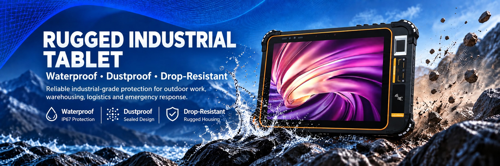

Tablet Series
IP65 sealing, 10000 mAh, native RJ45 Ethernet, and optional fingerprint, NFC, ID card and 2D modules.
OEM and ODM programmes for rugged handheld terminals and industrial tablets. Change the structure, interfaces, data capture modules, Android firmware, branding and packaging — or start from your workflow and let us build the device around it. Factory direct from Shenzhen.
Start from a shipping model — XH-100, XH-200, XH-300, XH-400 or XH-500 — and change the parts your deployment actually needs: module set, interface layout, housing colour, branding, packaging and firmware image. Because the mainboard and tooling already exist and have been through production, this is the fastest route and carries the least engineering risk. Most projects start here.
When the standard mechanical or electrical design cannot meet the requirement — a different screen size, a housing built into a kiosk or vehicle dock, an extra interface, or a module we have not integrated before — we design the change, build the tooling it needs, and take the device through samples and into production.

Six stages, with a written deliverable at the end of each one. You always know what stage the project is in and what is needed from you to move it forward.
You send the deployment scenario, operating environment, interface and module list, target volumes and the certifications your market requires. We map them onto an existing platform, or flag where a new design is needed.
You receive a written proposal: hardware baseline, bill of materials, any tooling or NRE, unit price at your target volume, sample plan and schedule. Nothing is committed before this is agreed.
Modified hardware and firmware are built as engineering samples. Modules, interfaces and mechanical parts are reviewed against the acceptance criteria, then revised until they pass.
Function, environmental and reliability checks run on the sample build. The certification scope for your market is agreed before tooling so the test plan fits the schedule instead of extending it.
Assembly, burn-in, serialisation and inspection against the agreed acceptance criteria, with batch records kept so a unit can be traced back to its build.
Private-label packaging, documentation and the firmware update policy, with spare-part and RMA handling defined before the first shipment leaves the factory.
Minimum order quantities, tooling cost and lead time all depend on how far the design departs from the standard platform. All three are confirmed in writing with the quotation, before any commitment.
Mainboard and interface changes: RJ45 Ethernet, USB-A, USB Type-C, TTL serial, GPIO and SPI lines. Battery capacity, camera and sensor set, and the data capture module — 2D scan engine, NFC, fingerprint or ID card reader.
Housing colour and finish, silk-screen and logo, keypad or button layout, hand strap and Pogo-pin docking contacts. Private-label colour box, manual, charger and accessory set, with carton and pallet spec matched to your logistics.
An Android build configured for your deployment: custom launcher, kiosk lock-down, pre-installed applications, enrolment into your MDM or EMM, API and SDK support for the installed modules, and OTA update handling.
| Area | Baseline | Custom options |
| Platform and OS | Android on MTK platforms; XH-300 ships Android 12, XH-400 ships Android 10/11 with GMS | Android version and build configuration, GMS or AOSP, launcher and kiosk mode, pre-installed apps |
| Display | 5-inch to 10.1-inch; XH-300 has 1920x1200 with Corning third-generation glass | Size, resolution, touch panel, cover glass, sunlight-readable treatment |
| Housing | Black or white, IP65 on XH-400 | Colour, finish, silk-screen, logo, custom moulding for kiosk or vehicle mount |
| Interfaces | RJ45, USB-A, USB-C, DC 3.5 mm, hybrid SIM/TF tray | Port set and position, TTL UART, GPIO, SPI, Pogo-pin docking contacts |
| Data capture | Optional 2D engine and NFC on the handheld models | 2D engine (Newland, Honeywell N3680, Zebra 4710), NFC 13.56 MHz, fingerprint (FAP10/20/30), second-generation ID card reader |
| Battery | 5100 mAh removable on XH-200; 10000 mAh on XH-300 and XH-400 | Capacity, removable or sealed construction, DC or USB Type-C charging, charge indicator |
| Branding | Xinhong Smart | Boot logo, housing silk-screen, device model name, labels and serialisation |
| Packaging | Colour box with charger, cable and manual | Custom colour box, manual, accessory set, carton and pallet specification |
| Documentation | Standard factory documentation | Test reports, certification scope for the target market, SDK and API documentation |
Choose a platform as the baseline, then tell us the modules, interfaces and system configuration your project needs. We will confirm which changes are available for the selected model.
IP65 sealing, 10000 mAh, native RJ45 Ethernet, and optional fingerprint, NFC, ID card and 2D modules.
Android 12, 4GB+64GB, 10000 mAh and built-in NFC, with optional barcode, fingerprint, RFID and Ethernet modules.
Android 12, 1920x1200 with Corning third-generation glass, 10000 mAh, optional 2D scan engine.
Android 12, removable 5100 mAh battery, Honeywell or Zebra 2D engine, NFC and full-band LTE.
5-inch Android identity terminal with NXP NFC, 2D scanning and FBI FIPS-201 fingerprint options.
The more of this you can send, the faster we can tell you whether a standard platform fits, and what it would cost to change:
Start a custom project Chat on WhatsApp
Shenzhen Xinhong Smart Technology Co., Ltd. · WhatsApp and phone +86 185 9427 9341 · sales@xinhongsmart.com · Mon–Sat, 9:00–18:30 (GMT+8). See the application notes for deployment examples, or read about our company, or see the OEM and ODM manufacturing capability page.